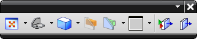
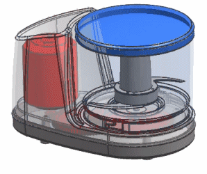
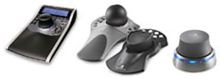

要更改视图方向，右击图形窗口背景并选择定向视图，然后从级联菜单中选择一个视图选项。
视图命令也可以在视图工具条中找到。


3D 输入设备是动态旋转、平移以及缩放视图最直接的方式。您可以用一只手旋转模型，用另一只手操纵鼠标选择对象。

如果您没有3D 输入设备，在图形窗口中使用鼠标按键也可以动态定向显示内容。
功能
鼠标按键
旋转
平移
+ -or- Shift+
缩放
+ -or- Ctrl+
 定向视图
定向视图 -or- Ctrl+
-or- Ctrl+